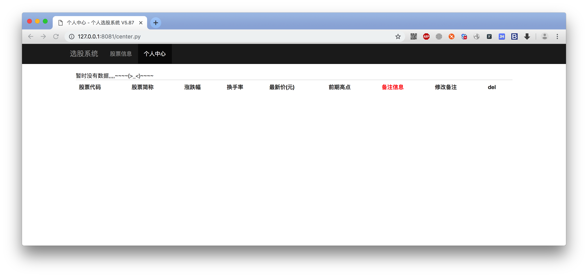

mini_web框架-替换模板变量
1. 目的
html文件是一个固定的，它里面存储的是固定不变的内容
如果在多次访问同一个html文件时，需要展示不同的页面内容，就需要对html文件中的指定部位进行数据替换
此时就用到"模板变量"，其实很类似Python字符串中的格式化%s、%d等占位符
只不过此时，我们规定用{% xxx %}而已
2. 代码实现
views/mini_web.py更新代码如下：
import re
import time
from contextlib import contextmanager
# 定义字典，key：url，value：函数引用
URL_ROUTE = dict()
# 定义变量，存储找html文件时的路径
TEMPLATE_PATH = "./templates"
# 定义一个上下文管理器
@contextmanager
def mini_open(file_path, mode="r"):
file_path = file_path.replace(".py", ".html")
f = open(TEMPLATE_PATH + file_path, mode)
yield f
f.close()
def route(url):
def set_func(func):
# 添加键值对，key是需要访问的url，value是当这个url需要访问的时候，需要调用的函数引用
URL_ROUTE[url] = func
def call_func(file_name):
return func(file_name)
return call_func
return set_func
@route("/index.py")
def index(url_file):
with mini_open(url_file) as f:
html_content = f.read()
return html_content
@route("/center.py")
def center(url_file):
with mini_open(url_file) as f:
html_content = f.read()
# --------更新-------
data_from_mysql = "暂时没有数据,,,,~~~~(>_<)~~~~ "
html_content = re.sub(r"\{% content %\}", data_from_mysql, html_content)
return html_content
@route("/login.py")
def login(url_file):
return "当前是登录页面login，时间是：%s" % time.ctime()
@route("/logout.py")
def logout(url_file):
return "当前是退出页面logout，时间是：%s" % time.ctime()
@route("/register.py")
def register(url_file):
return "当前是注册页面，时间是：%s" % time.ctime()
@route("/detail.py")
def detail(url_file):
return "当前是详情页面，时间是：%s" % time.ctime()
@route("404")
def page_404(url_file):
return "404，当前时间是：%s" % time.ctime()
def application(env, call_func):
"""
接收web服务器传递过来的 请求参数
:param file_path:
:return:
"""
# 提取浏览器请求的路径
url = env["PATH_INFO"]
# 找到url与函数映射的关系，并提取出函数的引用
func = URL_ROUTE.get(url, None) # 如果没有找到对应的url，则返回None
if not func: # 如果func是None，则意味着没有找到相同的url，此时找404
# 回调 call_func变量指向的函数，并且将 状态码以及header传递过去
call_func("404 Not Found", [("Content-Type", "text/html;charset=utf-8")])
func = URL_ROUTE.get("404", lambda: "404 Not Found") # 如果在URL_ROUTE中没有找到404，那么默认返回匿名函数
else:
# 如果找到了对应的url，则设置response header为200
call_func("200 OK", [("Content-Type", "text/html;charset=utf-8")])
# 2.3 调用对应的函数
response_body = func(url) # -------- 更新 ---------
# 2.4 返回数据当做body
return response_body
浏览器打开看效果
